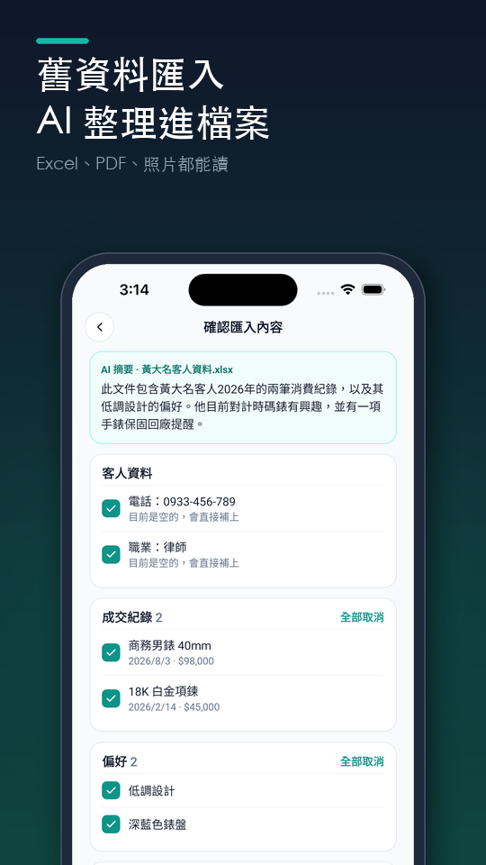

匯入教學：舊的 Excel、筆記、訂單 PDF，AI 幫你整理進客戶檔案
情境：剛開始用熟客簿，林姐這幾年的購買紀錄都在店裡的 Excel，喜好寫在手機備忘錄，還有一張紙本訂單。一筆一筆重打太花時間，乾脆就不打了。
打開林姐的客戶檔案點「匯入」，把 Excel、備忘錄或訂單照片丟進去，AI 會整理成成交紀錄、偏好、願望清單和提醒，你勾一勾、按確認就寫進去。

操作步驟
從客人打開匯入
在客戶檔案點上方的 匯入。匯入的內容只會寫進這一位客人。
選擇資料來源
三種方式擇一：選擇檔案（文字檔、Excel、CSV、PDF，10 MB 以內）、拍照或選照片（手寫筆記、紙本訂單、名片），或 貼上文字（從備忘錄、LINE 對話複製過來）。
等 AI 整理
AI 大約 10～30 秒會整理好。檔案裡如果有其他客人的資料，只會挑出和這位客人有關的部分。
確認要匯入的內容
確認頁會分成 客人資料、成交紀錄、偏好、願望清單、提醒。不要的項目取消勾選；已經在熟客簿裡的會標示 已在熟客簿裡，自動略過。電話等資料和現有的不同時，可以選 保留現有 或 用檔案的。
確認匯入
點 確認匯入，資料就會寫進客戶檔案。互動歷史會多一筆 匯入 紀錄，列出檔名與這次新增了哪些資料。
小技巧
- 匯錯了可以復原：匯入後 24 小時內，在互動歷史那筆匯入紀錄點 復原，這次新增的資料會全部移除，客人資料也會改回匯入前的內容。
- Excel 有多個工作表沒關係，例如一張購買紀錄、一張客人資料，AI 會一起讀。
- 舊版 .xls 檔請先在 Excel 另存成 .xlsx 或 CSV 再匯入。
常見問題
- 原始檔案會被保存嗎？
- 不會。檔案只用來分析，分析完就刪除，熟客簿只留下你確認匯入的資料。
- 同一份檔案匯入兩次，會重複嗎？
- 不會。同一天、同金額或同品名的成交，以及相同的偏好、願望清單和提醒，都會標示為已存在並自動略過。
- 一個 Excel 裡有很多位客人怎麼辦？
- 從哪一位客人的檔案按匯入，就只整理那位客人的部分，其他客人的資料不會寫進來。
- 匯入會用掉 AI 次數嗎？
- 會，每分析一份資料算一次，和語音速記共用每日額度。
- 哪些內容會被整理出來？
- 購買或成交紀錄、喜好與習慣、想要但還沒買的品項、之後的保養或回訪日期，以及電話、生日、會員編號、職業等客人資料。已經過去的事件不會建立提醒。
想直接試試看？
熟客簿是給第一線銷售顧問用的客戶管理 App：講 30 秒記好客人、生日回訪自動提醒、新貨到了幫你找出該通知誰。免費試用 14 天，不用綁信用卡。